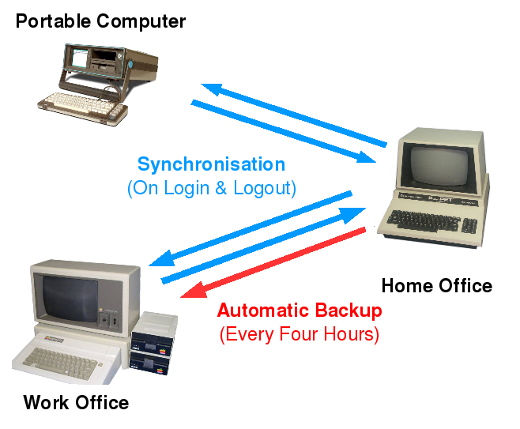

Lost in Logout Land: Running Scripts on Login and Logout (Partially Solved but Interesting Anyway)
Posted: Jul 16, 2008 00:07;
Last Modified: Jul 16, 2008 15:07
Keywords:
Every time I log on to one of my various computers, I update my basic file directories. Every time I log out, I back them up to a central server, which is itself updated six times a day. Here’s a schematic of how things work:

The issue for me is that this all happens by hand. Every time I log on to a new computer, I need to manually run an update script which then uses rsync to make sure the computer I am on is up-to-date with the central server (my home office computer). And when I am finished, I use a different script that uses rsync to backup the changes back to the central server, which is backedup six times a day using rsback to a separate disk on my office computer. If I forget to invoke the update or backup scripts, or both, I end up with version control problems and files that may or may not be backed up. And if I then start the system up again, I can lose data. Once, when my backup system was down, this cost me three months worth of emails.
So what I’d really like is a script that automatically synchronises each computer with the central server the moment I log on, and updates the central server again the moment I log off. Ideally, logging in and sychronising, and logging out and updating should be a single action in each case: selecting logout should fire off the script that updates the central server; logging in should fire off the script that ensures the computer I am on is synchronised with the central server.
This turns out to be fairly hard to set up in the system I use, Ubuntu 7.10/8.04 with Gnome 2.22.2. After a fair bit of research, I do know how to fire scripts that don’t require user intervention off automatically after login and after logout. But I still don’t know how to set them up comfortably (i.e. without a hack) if I also want them to fire off before logout or to involvhat I’d really like is a script that automatically synchronises each computer with the central server the moment I log on, and updates the central server again the moment I log off.e some minimal user interaction (because the scripts involve writing and deleting files, I like to leave myself the opportunity to abort them!).
I thought I’d share what I’ve found thus far, however, since my investigation has given me some answers to the often-asked but apparently rarely-answered questions “how do I run a script on/after/before login/logout?” and “how do I modify the login.log out screens?”
Method 1: /etc/gdm/PostLogin/Default, /etc/gdm/PreSession/Default, and /etc/gdm/PostSession/Default
If you have a shell script that does not require user intervention, you can run it automatically immediately after Login, immediately before the start of the Gnome Session (i.e. before the desktop is drawn), and immediately after your Gnome Session (i.e. after the Desktop closes down), by launching it from /etc/gdm/PostLogin/Default, /etc/gdm/PreSession/Default, and /etc/gdm/PostSession/Default respectively.
An example of a suitable script is:
touch /home/$USER/loginStatus
date >> /home/$USER/loginStatus
rsync -e "ssh -i /home/$USER/.ssh/<key>" -auvrC --delete
/home/$USER/loginStatus $USER@example.com/home/$USER/
&& echo "Login status updated" >> /home/$USER/loginStatus
|| echo "Login status update failed" >> /home/$USER/loginStatus
exit 0
Scripts in these directories are run as root; but $USER corresponds to the active user (seems counter-intuitive to me, but there you have it).
If you use these Default files, you do not need to make any changes to the login and logout buttons, commands, or scripts. When you log in from the greeter screen, scripts in /etc/gdm/PostLogin/Default and /etc/gdm/PreSession/Default will fire; when you logout from the Ubuntu Logout dialogue, scripts in /etc/gdm/PostSession/Default. As long as your script does not require programs started as part of your actual session (e.g. a terminal window, some zenity widgets), they should run just fine. If they require user intervention such as choosing or approving actions, however, they seem to run far less reliably: some things show up—my experience was that I could ask for user input at the beginning of scripts fired after login, and I was asked for a password in a script that used scp that fired after logout. But other interactions were unreliable or reliably failed.
Method 2: CUSTOM_CMD in gdm.conf and gdm.conf-custom
To get more control of your scripts’ operation, you probably need to modify the standard login and logout procedures. This way you could perhaps build a wrapper that changed the order in which your scripts fired: you might set up login is so that your update started after the session was started or change your logout so that the backup script fired after logout was chosen but before the session shut down. Or you might want to give yourself different ways of logging in and out: a fast version with no synchronisation and backup and a regular version with your custom scripts.
gdm, the Gnome manager, has a mechanism to allow you to do this using its configuration files gdm/gdm.conf and gdm/gdm.conf-custom (the absolute paths for these files in Ubuntu is /etc/gdm/gdm.conf and /etc/gdm/gdm.conf-custom; they are found elsewhere in other distributions). /etc/gdm/gdm.conf contains what one site claimed was 444 different settings; users can change any of these by placing the revised setting and value pair in /etc/gdm/gdm.conf-custom.
The standard login and logout dialogue settings are found in the section [daemon] of /etc/gdm/gdm.conf. The specific blocks are as follows:
# System command support. # # Reboot, Halt and suspend commands, you can add different commands separated # by a semicolon. GDM will use the first one it can find. RebootCommand=/sbin/shutdown -r now "Rebooted via gdm." HaltCommand=/sbin/shutdown -h now "Shut Down via gdm." SuspendCommand=/usr/sbin/pm-suspend HibernateCommand=/usr/sbin/pm-hibernate# The following options specify how GDM system commands are supported. # # Specify which actions are displayed in the greeter. Valid values are HALT, # REBOOT, HIBERNATE, SUSPEND, and CUSTOM_CMD separated by semicolons. SystemCommandsInMenu=HALT;REBOOT;HIBERNATE;SUSPEND;CUSTOM_CMD# Specify which actions are supported by QUERY_LOGOUT_ACTION, SET_LOGOUT_ACTION # and SET_SAFE_LOGOUT_ACTION. Valid values are HALT, REBOOT, HIBERNATE, SUSPEN$ # CUSTOM_CMD separated by semicolons. AllowLogoutActions=HALT;REBOOT;HIBERNATE;SUSPEND;CUSTOM_CMD
The first of these three defines the actual commands used to carry out some of the logout actions: reboot, halt (shutdown), suspend and hibernate (logout: i.e. close session but don’t halt or reboot, suspend, or hibernate is not one of them; when you log out of Gnome in Ubuntu, it behaves as if you were giving the command pkill -u $USER && gnome-session-save --kill --silent (if you want to get the logout dialogue from the command line, btw, use gnome-session-save --kill --gui).
The second block indicates which options are presented to the user when the get to the login (“greeter”) screen (SystemCommandsInMenu). The default is HALT, REBOOT, HIBERNATE, SUSPEND, and, if any are present, CUSTOM_CMD (on which see below). you can control the choice on the login splash (“greeter”) page by overwriting the default choice in your gdm/gdm.conf-custom file. The following, for example, would mean that the user could choose only REBOOT from the “Actions” or “Options” menu on the splash page:
SystemCommandsInMenu=REBOOT
The third block is supposed to define the options available in the logout dialogues within the session (i.e. what you get when you select “logout” within your session or type gnome-session-save --kill --gui from the command line). Unfortunately, however, neither Ubuntu nor Debian seem to use this command. Both use a custom logout dialogue defined in /usr/bin/gnome-panel (see below). No changes you make to AllowLogoutActions seems to have any effect on the logout dialogue you have within your Gnome session.
This is too bad, because otherwise you could use CUSTOM_CMD to make a wrapper to associate your backup scripts with a logout process and have this script appear in the logout dialogue. Because AllowLogoutActions seems to be disabled in Ubuntu, however, you in fact can only use CUSTOM_CMD to add an option to the greeter screen.
Method 3: Modify the Ubuntu logout dialogue
Since Ubuntu doesn’t use AllowLogoutActions to control the logout dialogue, you need to edit the Ubuntu script if you wish to change the available options or their operation. The logout dialogue is controlled by /usr/bin/gnome-panel; to modify this, you need to work with ~/gnome-panel-<version>/gnome-panel/panel-logout.c (to modify this, you will need to have the source for gnome-panel installed; see http://ubuntuforums.org/showthread.php?t=294219 for a discussion). Looking at this file, it appears that it is possible to make real changes to the Ubuntu dialogue—in addition to firing off a script the way I would like, it appears that you can use this file to add a timer to the logout window, or remove options such as halt, suspend, reboot, or even logout itself altogether.
Unfortunately, while it looks like this is the place to work to really get the logout dialogue doing what I want, working with the code is more than I know how to do. But perhaps knowing where it is might help somebody else ;)

Comment [1]
Mahmudul Hasan (Sun Jul 20, 2008 (13:05:48)) [PermLink]: I would go for Method 1; probably with the help of some Expect(a variant of TCL) Scripts for automated User interaction.